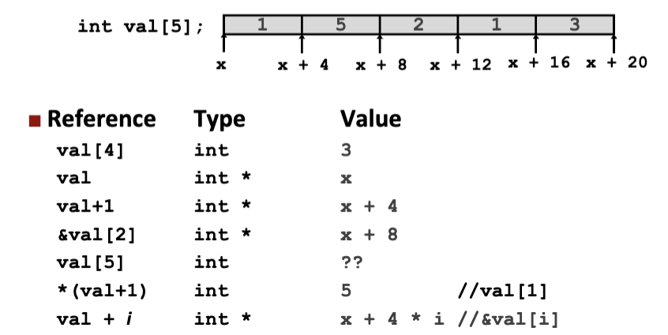
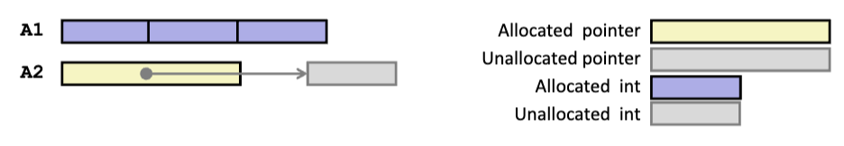
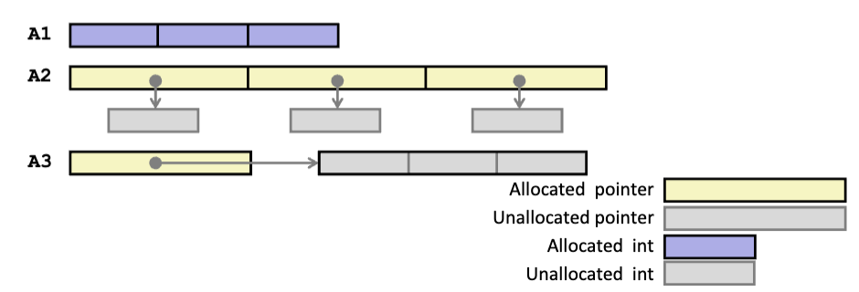
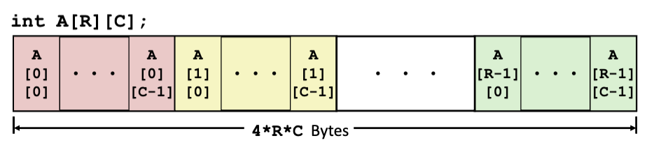
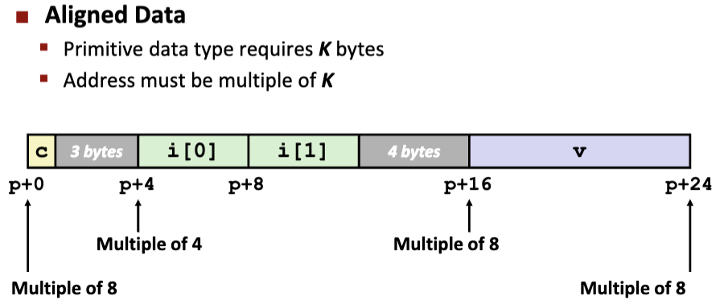
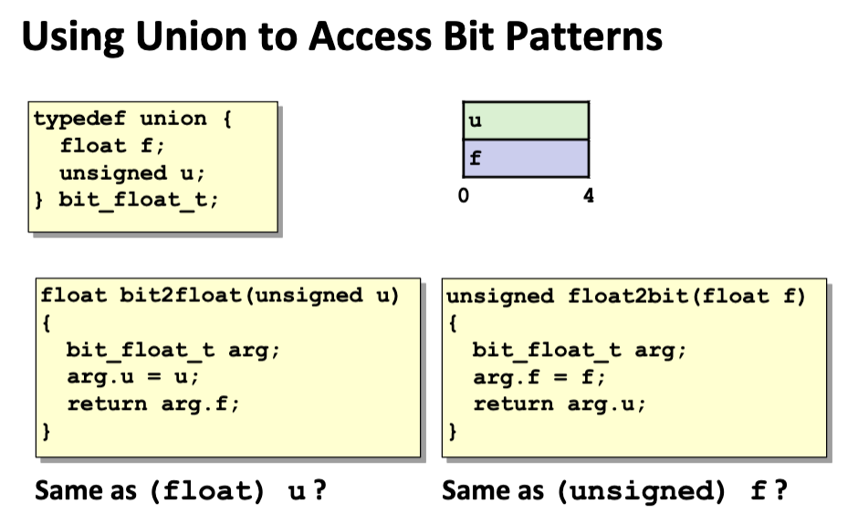

Array数组
Type A[L]会在内存中分配连续的\(L * sizeof(Type)\)个字节；- 其中单独的
A表示数组指针；\(A
+ i\)事实上是\(A + i *
sizeof(Type)\)的地址；
int get_digit(int *a, int x) {
return a[x];
}
// 翻译成汇编代码
// %rdi = a, %rsi = x;
movl (%rdi, %rsi, 4), %eax; // a + 4 * x;
- 数组可以视为首项的指针，对于两者混用的情况，做出以下区分：
| Decl |
|
A1, A2 |
|
|
*A1, *A2 |
|
|
Cmp |
Bad |
Size |
Comp |
Bad |
Size |
| int A1[3] |
Y |
N |
12 |
Y |
N |
4 |
| int *A2 |
Y |
N |
8 |
Y |
Y |
4 |
- 其中
int *A2声明了一个指向整形的指针，但它指向的地址显然没有被指定，即指向一个未被分配的内存空间，是一个坏指针；
| Decl |
|
An |
|
|
*An |
|
|
**An |
|
|
Cmp |
Bad |
Size |
Cmp |
Bad |
Size |
Cmp |
Bad |
Size |
| int A1[3] |
Y |
N |
12 |
Y |
N |
4 |
N |
- |
- |
| int *A2[3] |
Y |
N |
24 |
Y |
N |
8 |
Y |
Y |
4 |
| int (*A3)[3] |
Y |
N |
8 |
Y |
Y |
12 |
Y |
Y |
4 |
| int (*A4[3]) |
Y |
N |
24 |
Y |
N |
8 |
Y |
Y |
4 |
- 其中
int *A2[3]相当于int (*A4[3])，其中，()的优先级最高，[]次之，然后是*；
int *A2[3]表示包含3个整形指针的数组；方括号[]的优先级高于*，所以A2[3]表示A2是一个数组；int *表示数组的每个元素是一个指向int类型的指针。int (*A3)[3]表示指向一个包含3个整形的数组的指针；()的优先级高于[]，所以
(\*A3)表示A3是一个指针。- 二维数组按行优先存储；
- 要访问
A[i][j]，取A + (i * C + j) * 4即可；
Structure自定义结构体
- 结构体也是一段连续的内存区域；
- 结构体的某个类型对象的地址必须是k = 2, 4,
8的倍数（对齐）；原因是：
- 内存访问的单位是块：
- 在现代计算机中，内存通常是以固定大小的块（如 4
字节或 8 字节，依赖于系统架构）进行访问的。
- 这种对齐方式是硬件设计的结果，因为大多数处理器一次性加载的数据是 4
字节（32 位）或 8 字节（64 位），以提高性能。
- 缓存行（Cache Line）的作用：
- 缓存行是 CPU 缓存与内存之间传输数据的最小单位，典型大小为 64
字节。
- 当 CPU
访问内存时，会将整块缓存行加载到缓存中，以减少后续访问的延迟。
- 跨缓存行访问的影响：如果一个数据（如一个结构体或数组元素）跨越了两个缓存行：
- CPU 需要加载两个缓存行（额外的内存访问）。
- 性能下降，因为需要两次读取操作。
- 对齐的意义：
- 数据对齐可以避免跨缓存行的情况，确保数据操作只涉及单个缓存行，从而提高访问效率。
- 虚拟内存的分页（Page）机制：现代操作系统的虚拟内存将内存划分为
页（Page），每页通常是 4 KB。
- 页是内存管理的最小单位，每一页可能映射到不同的物理内存区域，或者部分未分配。
- 跨页访问的复杂性：如果一个数据块（如数组或结构体）跨越了两个页：
- 操作系统需要处理两次页表查找，性能下降。
- 如果某一页未映射（如缺页错误），会导致额外的开销。
- 在某些极端情况下（如页权限不同），可能会引发访问冲突或安全问题。
- 对齐的重要性：
- 避免数据跨页存储可以减少页表查找和缺页错误，简化虚拟内存管理，提高内存操作效率。
- 所以，倾向于将占字节数大的对象放在前面减小空间浪费；
浮点代码
Union共用体
- 根据最大的类型对象所占字节数分配内存；
- 一次只能使用一个对象；

- Same as (float) u?
- 不相同：
(float) u的含义：
- 这是一个类型转换，表示将 unsigned 类型的整数 u 转换为 float
类型。
- 转换时，u 的数值会从整数解释为浮点数，改变其表示方式。例如，u = 42
会被转换为浮点数 42.0。
bit2float的含义：
- bit2float 并不改变位模式，而是通过 union 将 unsigned
类型的位模式解释为 float 类型。
- 如果传入的 u
并不是有效的浮点数位模式，结果可能是未定义的浮点数。
- Same as (unsigned) f？